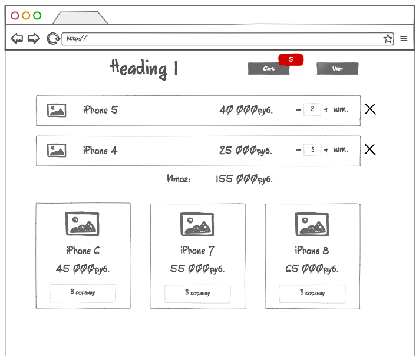
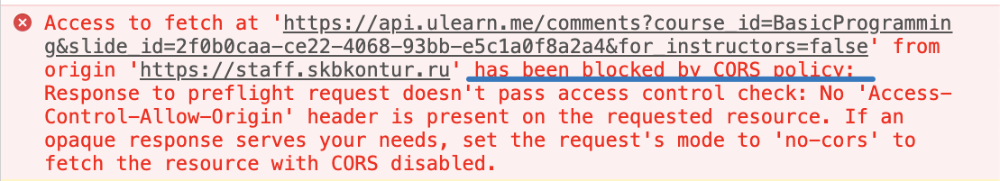

<!doctype html>
<html>
<head>
    <meta charset="utf-8">
    <meta name="viewport" content="width=device-width, initial-scale=1.0, maximum-scale=1.0, user-scalable=no">
    <link rel="stylesheet" href="reveal/css/reveal.css">
    <link rel="stylesheet" href="reveal/css/theme/kontur-light.css" id="theme">
    <!-- Theme used for syntax highlighting of code -->
    <link rel="stylesheet" href="reveal/css/highlight/idea-for-light.css">
    <link rel="stylesheet" href="reveal/css/highlight/darkula-for-dark.css">
    <!--[if lt IE 9]>
    <script src="reveal/js/html5shiv.js"></script>
    <![endif]-->
	<script defer src="reveal/js/head.min.js"></script>
	<script defer src="reveal/js/reveal.js"></script>
	<script defer src="reveal/initialize.js"></script>
	<script defer src="reveal/js/d3.min.js"></script>
	
	<title>Backend для фронтендеров</title>
</head>
<body>

<div class="reveal"><div class="slides">

<section data-markdown><script type="text/template">

# Backend для фронтендеров

</script></section>

<section data-markdown><script type="text/template">

## Что такое бекенд

***

### Что такое бекенд?

<ul>
<li class="fragment">А что такое фронтенд?
<li class="fragment">Какие типы приложений имеют бекенд?
<li class="fragment">Чем бекенд отличается от сервера?
<li class="fragment">Чем фронтенд отличается от клиента?
<li class="fragment">На сервере тоже может быть фронтенд. Как думаете, что это такое?
</ul>

***

### Зачем нужен бекенд?

<ul class="fragment">
<li>аутентификация
<li>хранение данных
<li>доверенные действия
<li>проксирование запросов, тяжелые расчеты, обработка данных(сжатие картинок, например)…
</ul>


***

### Как взаимодействуют бекенд и фронтенд...

<ul>
<li class="fragment">если нужно отобразить статическую html-страницу?
<li class="fragment">если на странице есть картинки?
<li class="fragment">если на странице есть стили или скрипты?
<li class="fragment">если скрипт делает AJAX-запрос?
</ul>

***

### Как взаимодействуют бекенд и фронтенд в SPA?

<ul>
<li class="fragment">Пользователь пришел по какому-то урлу `https://our-app.ru/profile/4343`. Что происходит на сервере?
<li class="fragment">Реакт хочет получить какие-то данные, чтобы показать страничку. Как это делается?
</ul>

***

### Как взаимодействуют бекенд и фронтенд в SPA?

<ul>
<li>Пользователь пришел по какому-то урлу `https://our-app.ru/profile/4343`. Что происходит на сервере?
__По всем урлам сервер отдает одну и ту же статику, которая подключает собранный бандл скриптов и стилей (для стилей, скриптов и картинок отдельный урл)__

<li>Реакт хочет получить какие-то данные, чтобы показать страничку. Как это делается?
__По урлам, начинающимся, например, с `/api/` сервер отдает данные — это дверь для взаимодействия с фронтом__
</ul>


***

### В современном вебе бекенд и фронтенд изолированы друг от друга

и общаются только через HTTP-протокол (или websocket-протокол)

<ul>
<li class="fragment">Означает ли это, что можно не знать, как все работает на беке?
<li class="fragment">Какую информацию про работу бекенда важно знать?
<li class="fragment">Как вам кажется, должен ли бекендер знать что-то про фронтенд?
</ul>

</script></section>

<section data-markdown><script type="text/template">

## Проектирование клиент-серверных взаимодействий. API

***

### Представте себе ситуацию:

Ты выходишь на работу и тебе предлагают запилить новую фичу в проект.
Например, у нас интернет-магазин и мы хотим запоминать корзину пользователя на сервере.

Как могут быть дела у бекендера:
- уже все готово
- прямо сейчас начинает делать эту задачу
- пока не планирует за нее браться


<p class="fragment">__Твои действия в каждом из этих случаев?__</p>

***

### Проектируем API




</script></section>

<section data-markdown><script type="text/template">

## REST API

***

### HTTP методы

<ul>
<li class="fragment">Какие методы HTTP-запросов вы знаете?
<li class="fragment">Для чего используется каждый из методов?
<li class="fragment">Можно ли использовать методы не для того, для чего они нужны?
<li class="fragment">Чем отличается метод GET от метода POST?
</ul>


***

### Какой метод использовать, чтобы...

<ul>
<li class="fragment">узнать у центробанка котировки валют?
<li class="fragment">зарегистрировать нового пользователя?
<li class="fragment">отредактировать статью на сайте?
<li class="fragment">удалить товар из корзины?
<li class="fragment">удалить фотографию из альбома?
<li class="fragment">поставить лайк к комментарию в соцсетке?
</ul>


***

### Коды ответов

<ul>
  <li class="fragment">Что такое код ответа?
  <li class="fragment">Какие они бывают?
  <li class="fragment">Зачем их существует так много?
  <li class="fragment">Назовите коды ответов, которые вы знаете и их значения
  <li class="fragment">Какие коды будут обозначать, что все хорошо?
  <li class="fragment">Какие коды обозначают, что ошибка со стороны клиента?
  <li class="fragment">Какие коды обозначают, что ошибка случилась на сервере?
  <li class="fragment">Что будет, если использовать неподходящий код ответа?
  <li class="fragment">Что будет, если всегда отвечать кодом 200?
</ul>


***

### Тренировка. Что делают вызовы API?

<span class="fragment">`GET /users/5`</span>
<span class="fragment">`POST /users`</span>
<span class="fragment">`DELETE /users/6`</span>
<span class="fragment">`PUT /users/2`</span>
<span class="fragment">`PUT /users/100500`</span>
<span class="fragment">`PATCH /users/3`</span>
<span class="fragment">`GET /users`</span>
<span class="fragment">`GET /users?pageNumber=5&pageSize=100`</span>
<span class="fragment">`OPTIONS /users`</span>
<span class="fragment">`OPTIONS /users/6`</span>
<span class="fragment">`HEAD /users/5`</span>


***

### Как лучше...


<ul>
  <li class="fragment">`GET /products?pageNumber=3&pageSize=50` или `GET /products/nextPage`?
  <li class="fragment">`POST /users/createUser` или `POST /users`?
  <li class="fragment">`GET /deleteUser?id=5` или `DELETE /users/5`?
  <li class="fragment">`POST /auth` или `GET /auth?login=ivanov&pass=qwerty`?
</ul>

***

### REST

В концепции REST API есть много принципов, но мы рассмотрели те, которые нужнее всего знать фронтендеру.

__Подведем итоги:__

<ul>
  <li class="fragment">Зачем использовать правильные методы (в концепции REST они называются verbs)?
  <li class="fragment">Зачем использовать какие-то коды ответов, кроме 200?
  <li class="fragment">Можно ли улучшить спроектированное нами API?
</ul>

</script></section>

<section data-markdown><script type="text/template">

## Документация

***

### Как узнать, какие у апи есть методы?

<ul>
  <li class="fragment">Как думаете, как называются в коде на C# те места, которые отвечают за обработку запросов?
  <li class="fragment">Что вы делаете в своем коде, чтобы другим было легче разобраться, где что лежит?
  <li class="fragment">Сайт с описанием контуровских контролов был создан при помощи библиотеки React Styleguidist.
    Как думаете, откуда там берутся тексты описаний и описание возможных параметров?
</ul>

***

### Swagger

Сейчас мы посмотрим на автогенерируемую документацию к апи.

1. Склонируй репозиторий
[https://github.com/kontur-courses/web-game](https://github.com/kontur-courses/web-game)
2. Сделай git checkout на ветку `solved`
3. В терминате перйди в папку `WebApi`
4. Выполни в терминале команду `dotnet run`
5. Перейди на [https://localhost:5001/](https://localhost:5001/)
6. Убеди браузер, что отсутствие сертификата — это норм


***

### Разберемся с интерфейсом swagger


</script></section>

<section data-markdown><script type="text/template">

## CORS

***

### Безопасность запросов в браузере

<ul>
    <li class="fragment">Как думаете, можно ли из вкладки браузера узнать, что лежит у пользователя на компьютере?
    <li class="fragment">Что может случиться, если на вашей странице будет выполнен чужой вредоносный код?
    <li class="fragment">Как браузеры могут защищать своих пользователей?
</ul>


***

### Same-origin policy

<ul>
    <li class="fragment">Что такое Same-origin policy?
    <li class="fragment">Зачем оно может быть надо?
</ul>


***

### Браузер делает так



Как обойти такое?

***

### Вы не получите данные запроса

если у сервера не указан заголовок "Access-Control-Allow-Origin"
__Как победить?__

<ul>
    <li class="fragment">Если у вас есть доступ к коду сервера?
    <li class="fragment">Если вы хотите ходить на сервер с localhost?
    <li class="fragment">Если доступа к коду сервера нет?
</ul>


</script></section>

<section data-markdown><script type="text/template">

## Аутентификация

***

### Как проверить, кто к нам пришел?

<ul>
    <li class="fragment">Какие есть способы узнать, что за пользователь у нас на странице?
    <li class="fragment">Как сохранить информацию о том, кто этот пользователь?
    <li class="fragment">Как передавать информацию об этом серверу?
</ul>

</script></section>

<section data-markdown><script type="text/template">

## Заключение


***

### Что вы мы рассказали друг другу:

- Как проектировать серверный API
- REST API
- Документирование
- CORS
 - Авторизация


***

## Вопросы?

</script></section>

</div></div>
</body>
</html>
